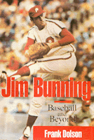

<body bgcolor="#FFFFFF" text="#000000" link="#0000FF" vlink="#CC0000" alink="#CC0000"><center><hr width="350" size="1" align="center" noshade>A biography of the Hall of Famer who pitched no-hitters against the sluggers of both leagues, took on sportswriters and baseball leaders, and started a second career as a politician<hr width="350" size="1" align="center" noshade><p><a href="https://cdcshoppingcart.uchicago.edu/Cart/ChicagoBook.aspx?ISBN=9781566396363&&PRESS=temple" target="_top">Buy this book!</a> | <a href="https://cdcshoppingcart.uchicago.edu/Cart/Cart.aspx?PRESS=temple" target="_top">View Cart</a> | <a href="https://cdcshoppingcart.uchicago.edu/Cart/Cart.aspx?PRESS=temple" target="_top">Check Out</a></p><p></p></center><!--none//--><h1>Jim Bunning</h1>
<H2>Baseball and Beyond</H2>
<h3>Frank Dolson</h3>
<P>cloth 1-56639-636-0 $40.50, Aug 98, <FONT COLOR=#990033>Available</FONT>
<br>Electronic Book 1-43990-569-X $40.50 <FONT COLOR=#990033>Available</FONT>
<BR> 320 pp
6x9
22&nbsp;halftones
</P><p>Jim Bunning began as a $150-a-month rookie in Richmond, Indiana, spent seven years in the minor leagues, and still made it to the Hall of Fame. He pitched a no-hitter against the Boston Red Sox in Fenway Park, even though the first-base coach was relaying his catcher's signs to the batters, retiring Ted Williams for the final out. Bunning also pitched a historic perfect game against the New York Mets and performed
spectacularly in a succession of All-Star Game appearances.
<p>He was the second pitcher in major league history to win 100 games in each league. The first was Cy Young. He was the second pitcher to strike out 1000 in each league; again, only Cy Young beat him to it. When Bunning retired at the end of the 1971 season, only one man-Walter Johnson-had more career strikeouts.
<p>A proud, intensely competitive man, Bunning relished his duels with Ted Williams, Mickey Mantle, and other slugging superstars of the day. What he didn't relish was dealing with sportswriters who didn't do
their homework and with baseball leaders whose mismanagement, Bunning felt, jeopardized the game's place in the nation's heart. He waged battles with the likes of former commissioner Peter Ueberroth and
club-owner-turned-interim-commissioner Bud Selig.
<p>But Bunning did more than play baseball. He was a driving force in the early years of the Players Association, one of the men responsible for choosing Marvin Miller as head of the union. Bunning also was a manager in the minor leagues and in Puerto Rico and the Dominican Republic and was even a player's agent for a time.
<p>His baseball career behind him, he began a second career in politics. With a huge assist from his wife, Mary, the mother of their nine children, he waged an unsuccessful gubernatorial campaign in Kentucky and
then became a six-term congressman. Bunning is currently running for the U.S. Senate seat in Kentucky.
<BR>&nbsp;<h2>Excerpt</h2><P>Excerpt available at <a href="http://www.temple.edu/tempress">www.temple.edu/tempress</a></p>
<BR>&nbsp;<h2>Contents</h2><P>
<p>Introduction
<br>1. The Best Day
<br>2. Turning Pro
<br>3. Mary
<br>4. The Winter Game I (The Player)
<br>5. The Tigers
<br>6. Champs&#151for 150 Games
<br>7. The Crash Of '64
<br>8. Trying To Win 20
<br>9. A Star Among Stars
<br>10. A Union Man
<br>11. The Competitive Edge
<br>12. Farewell To Pitching
<br>13. Back To The Minors
<br>14. God's Country
<br>15. Jim Bunning, Mud Hen
<br>16. The 89ers
<br>17. The Firing
<br>18. The Winter Game II (The Manager)
<br>19. The Political Game
<br>20. Man Of The House
<br>21. Love Of The Game
<br>22. The Biggest Challenge
<br>Appendix: The No-Hitters
<br>Index
<br>Photographs
</P><BR>&nbsp;<H2>About the Author(s)</H2>
<P><B>Frank Dolson</B>, a former <I>Philadelphia Inquirer</I> sports editor and columnist, covered Bunning during his playing days in Philadelphia, and traveled extensively with him during his five years as a minor league manager and again along the campaign trail.</P>
<BR><H2>Subject Categories</H2>
<p><A HREF="/tempress/sports.html" TARGET="_top">Sports</a>
<BR><A HREF="/tempress/political.html" TARGET="_top">Political Science and Public Policy</a>
<BR><A HREF="/tempress/biography.html" TARGET="_top">Biography/Memoir/Autobiography</a>
</p>
<BR><h2 class="inpageheading">In the series</H2>
<P><I><a href="http://www.temple.edu/tempress/baseball.html" onMouseOver="window.status='Click for other books in this series!'; return true;" onMouseOut="window.status=''; return true;" target="_top">Baseball in America</a></i>, edited by Rich Westcott.
</p>
<p align="center"><a href="https://cdcshoppingcart.uchicago.edu/Cart/ChicagoBook.aspx?ISBN=9781566396363&&PRESS=temple" target="_top">Buy this book!</a> | <a href="https://cdcshoppingcart.uchicago.edu/Cart/Cart.aspx?PRESS=temple" target="_top">View Cart</a> | <a href="https://cdcshoppingcart.uchicago.edu/Cart/Cart.aspx?PRESS=temple" target="_top">Check Out</a></p><p><font face="Arial" size="1"><a href="copyright.html" onMouseOver="window.status='Web Copyright Policy';return true;" onMouseOut="window.status=''" title="Web Copyright Policy">&copy;</a> 2015 <a href="http://www.temple.edu" target="new" onMouseOver="window.status='Link to Temple University home page';return true;" onMouseOut="window.status=''" title="Link to Temple University home page">Temple University</a>. All Rights Reserved. http://www.temple.edu/tempress/titles/1374_reg.html</font></p>